The score is only useful if people can trust it.
Repairability scores are supposed to translate technical repair barriers into consumer-facing signals. But the findings show a system with three weak links: manufacturers can claim scores that do not match independent assessment, official databases accept low-quality or unusable repair resources, and retailers often fail to show the labels at the moment of purchase.
France moved first. Its repairability index took effect on January 1, 2021 for five categories of electronic devices sold in France, after a 2019 law required clear repairability information at the point of sale. Manufacturers calculate the score, sellers display it, and the 0-to-10 grade is built from criteria such as documentation, disassembly, spare-parts availability, and spare-parts prices.
The EU followed with smartphone and tablet repairability classes on the energy label, in force from June 20, 2025. Those labels run from A to E and are based on factors including disassembly depth, fasteners, tools, spare-parts availability, software updates, and repair information.
That context matters because the label is only the front end. A public-interest tool becomes a marketing badge if the score is inflated, the evidence behind it is inaccessible, or the label is missing from the store shelf.

Inflated scoring
ASUS reports perfect 10/10 French Repairability Index scores for more than 40 laptops, including a ROG Flow Z13 that independent scoring rates at 7.4/10.
Broken transparency
EPREL records point consumers to empty fields, "see manual" notes, generic support pages, AliExpress, and Temu for legally relevant repair information.
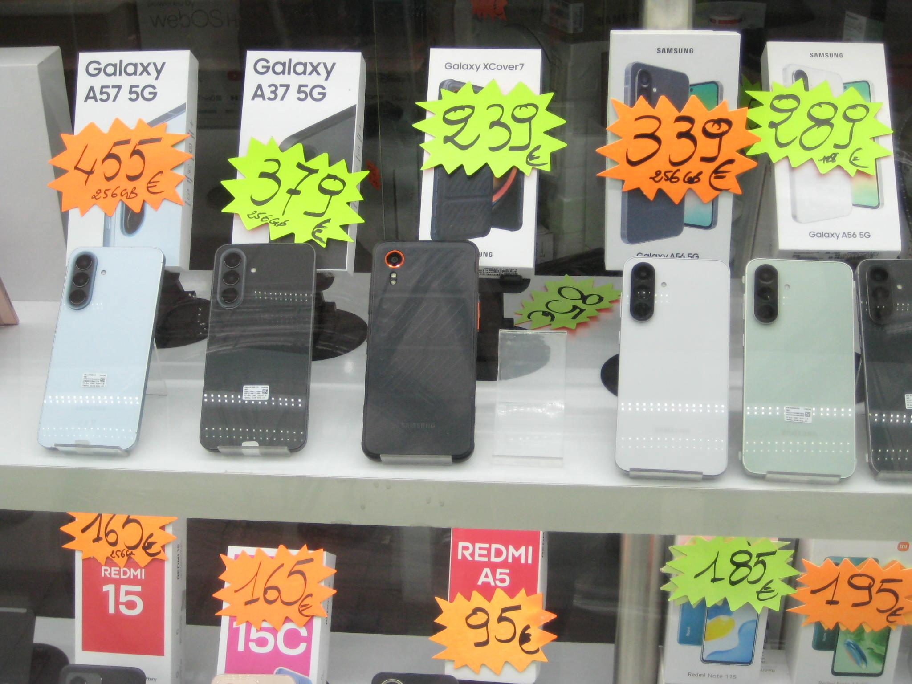
Missing at retail
Independent checks found major online and physical retailers failing to display required smartphone energy and repairability labels.
ASUS gave themselves 10/10. Our repairability engineers disagree.
The ASUS ROG Flow Z13 GZ302EA is a repairable tablet-style device by modern standards. That is not the same as a 10/10.
Independent iFixit scoring treats the device as a tablet because the guts live behind the display and the keyboard detaches magnetically. That is the more lenient path: a laptop scorecard would be harsher. Even then, the result is 7.4/10, not 10/10.

The design has strengths: the screen comes away first, the battery is screwed rather than glued, the SSD is accessible behind a hatch, and many modules are replaceable. But the charging ports are soldered to the motherboard, RAM and wireless are soldered, one fan is trapped under the heatsink, and the official support path does not clearly lead ordinary consumers to buy parts.
The service manual is public and useful, but it lacks troubleshooting, a parts list with part numbers, and board diagrams. ASUS's official US support path did not expose parts for sale; the separate ASUS parts site appeared legitimate but was not clearly endorsed from the official support page.
ASUS declared score vs independent score
Independent scoring summary supplied for ASUS ROG Flow Z13 GZ302EA.
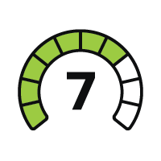


Official repair links often do not lead to repair.
A repairability label depends on the underlying repair resources. EPREL records show widespread failure at that layer.
In the smartphone and tablet dataset, 39 devices list Temu as the official web link for repair instructions, spare-part information, and pre-tax spare-part pricing. Temu and AliExpress are marketplaces, not repair-service providers, so those links do not give consumers repair instructions, repair support, or spare-parts pricing in the way the regulation expects. Across a broader review of active smartphone records, 5% point to Temu or AliExpress, and 81% of information sheets do not lead to the spare-parts prices required by regulation.
Smartphone records without usable spare-parts pricing
Counts from our analysis of 2,054 active smartphone/tablet records.
These are not cosmetic problems. If a consumer scans a label and finds an empty field, a generic brand homepage, a locked-down support flow, or a marketplace listing, the regulation has not produced meaningful price transparency.
The Temu finding is especially damaging because it puts the burden on consumers to navigate marketplace imports, potential duties, and compliance uncertainty, while still appearing in an official repair-information field. A marketplace listing is not the same thing as a repair channel or a parts catalogue, and it does not satisfy the consumer-facing purpose of the label.
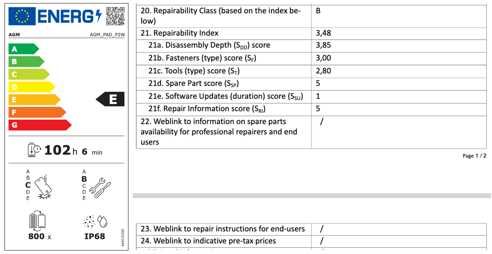
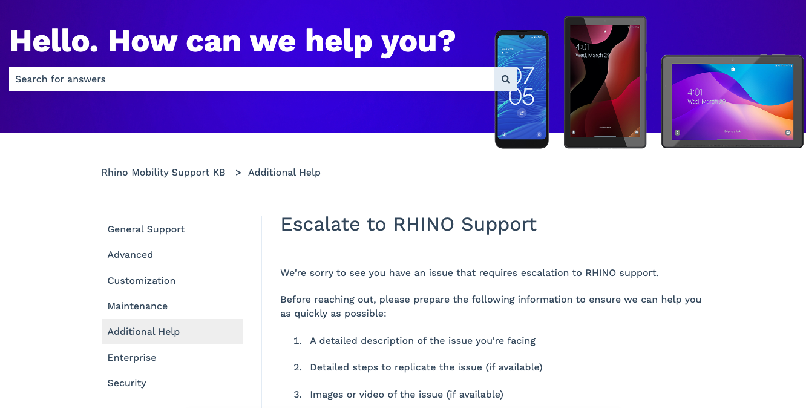
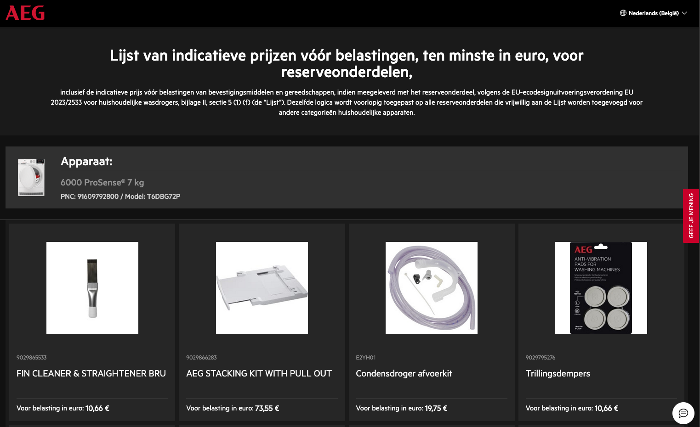
Retailers are not consistently showing mandatory labels.
The label cannot guide purchases if shoppers never see it.
Independent checks found missing smartphone labels across major online retailers and physical stores. mediamarkt.de and saturn.de are large German consumer-electronics storefronts where shoppers compare phones before they buy. If the score is absent there, the label is missing at the exact point where it is supposed to influence the purchase. On mediamarkt.de, 2,775 of 4,857 smartphone listings lacked a score. On saturn.de, 2,779 of 4,955 did.
MediaMarkt Belgium's online filter implied labels for fewer than half the listed phones, and a Brussels MediaMarkt store had 19 of 113 smartphones on display without the required label. That matters because the regulation is not just about publishing a score somewhere in the system; it is about putting the score in front of the shopper, on the product page or on the shelf, where it can actually shape a decision.
The label cannot guide purchases if shoppers never see it.
Where labels or scores were missing
Online percentages are based on our listing and filter-count checks; store count is 19 of 113 smartphones.
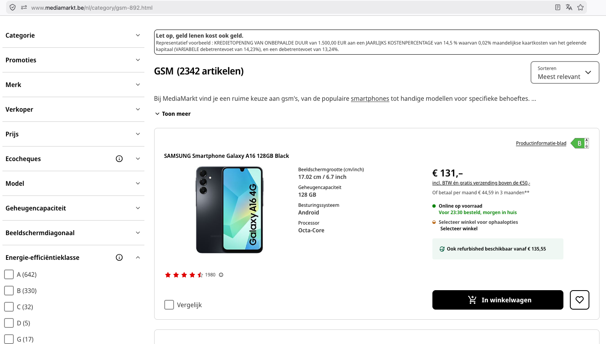
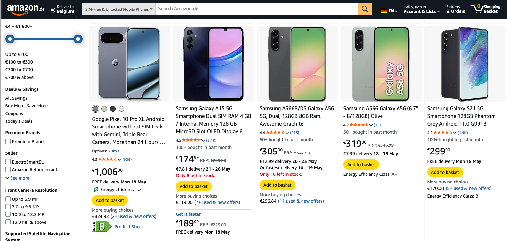
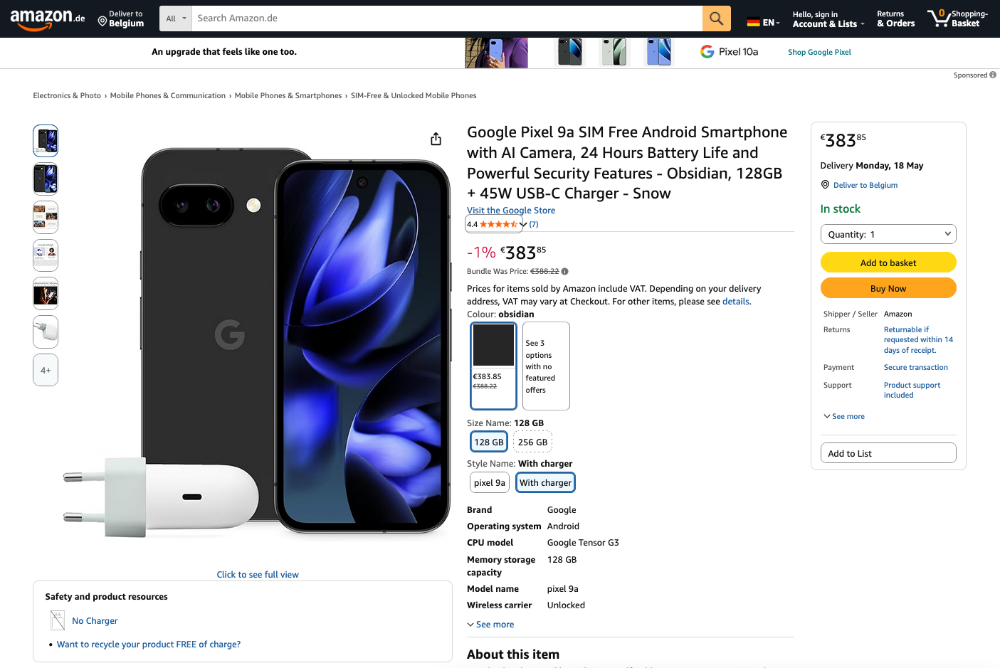
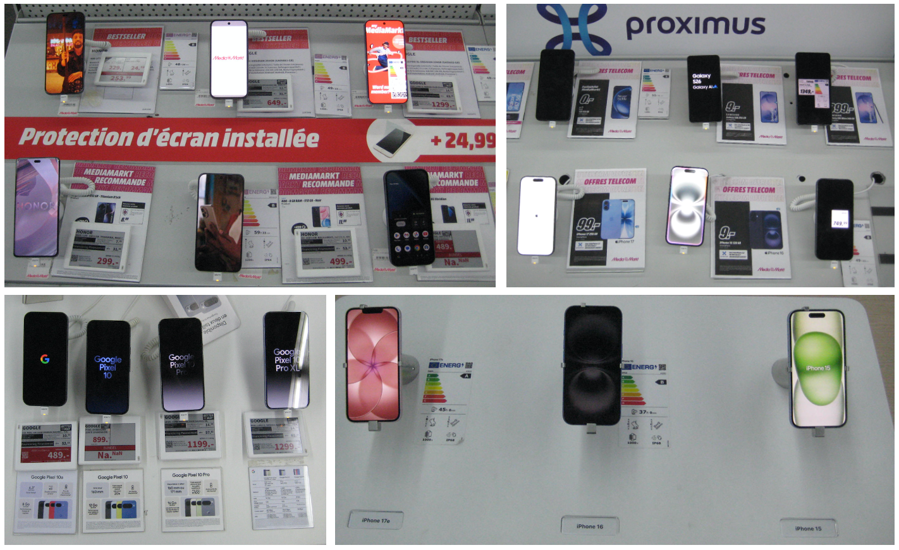
When almost everything scores high, the score stops meaning much.
Repair scores are supposed to help shoppers tell the difference between products. If nearly every product earns an 8, 9, or 10, the label becomes functionally useless.
The French Repairability Index data is heavily skewed: data.gouv.fr repairability entries average 9.22 with a 9.3 median, compared with Boulanger data at 7.96 mean and 8.0 median. In the government repairability dataset, 97% of products score 8/10 or higher, and only 8 of 2,173 score below 6.0. A scale with that little spread does not give consumers a meaningful way to compare repairability.
FRI scores look much higher in the voluntary government dataset
Reporting FRI data to data.gouv.fr is voluntary, creating a likely selection bias toward higher ratings.
We are not saying manufacturers are lying. We are saying the system gives them every reason to claim the highest score they can, and it does not appear to check those claims aggressively enough. When the incentives push upward and the guardrails are weak, the result is predictable: scores bunch at the top.
A scale with that little spread does not give consumers a meaningful way to compare repairability.
There are also direct data-quality problems: 48 repairability products and 18 durability products have conflicting scores depending on source. Smartphone manufacturers largely skipped reporting to data.gouv.fr, except for brands such as Fairphone and Crosscall, making that category unrepresentative.
In EPREL, some white-label devices using names such as "S24 Ultra" and "S25 Ultra" report repairability scores higher than actual Samsung devices. Three devices claim perfect 5.0/5.0 repairability across all sub-scores. All 11 ARCHOS tablets score exactly 1.0 across every criterion. Those patterns may reflect real products. They also look like self-reporting with too little oversight.
Repair information is still hard to get, even for professionals.
The EU rules do not only require a label. They also rely on access to practical repair information. The findings show that access still breaks down.
For tumble dryers, 55% of model information sheets did not link to a page where the required spare-parts price information was actually available. For professional repairers, the problem is more basic: some manufacturers still refuse or delay access to service manuals, diagnostics, wiring diagrams, and error codes.

Jacob D'Hollander, appliance repairer in Ghent, Belgium. Photo (c) Brecht Van Maele."The new regulations have not made it any easier for me to get service manuals or error codes."
Tumble dryer records with weak parts-price access
Counts from our analysis of 5,159 active dryer records.
That is the experience of Jacob D'Hollander, a Belgian appliance repairer who meets the professional requirements but still struggled for months to obtain information that ecodesign rules are supposed to make available within five working days.
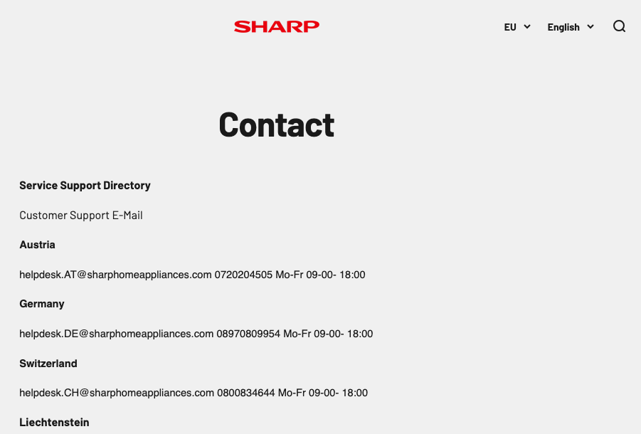
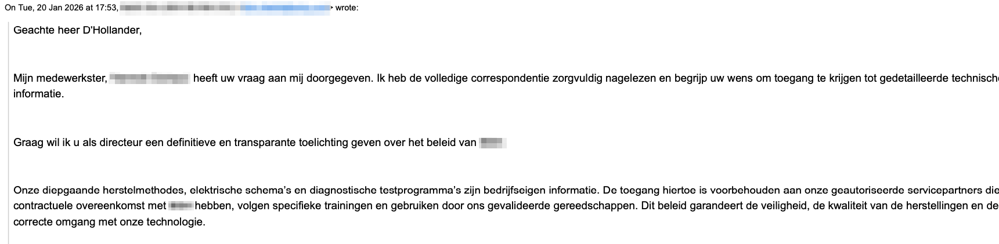
We need to demand better repairability data.
Each individual problem has a narrow explanation. Together, they point to a credibility failure.
A repair label can survive some noise in the data. It cannot survive perfect self-scores that independent reviewers do not support, official repair links that point to Temu, missing retail labels, and repair information systems that block the very people expected to repair products.
For journalists
Interrogate the scores. Ask manufacturers to defend perfect ratings, test whether official repair links lead anywhere useful, and check whether retailers are showing labels where the law says they must.
For consumers
A high score does not necessarily mean parts are easy to buy, repair instructions are useful, or the label will appear where you shop.
For regulators
The system needs market surveillance: score audits, link validation, retailer checks, and consequences for inaccessible repair information.